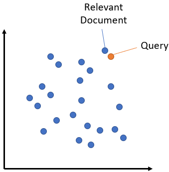

Text Similarity
Introduction
- Similarity between two words, sentences or documents is a function of commonality shared by them. This commonality can be measured by different metrics.
- Recently there has been a trend of using semantic based approaches, but historically, many similarity based non-neural algorthms were built.
- But which is the best string similarity algorithm? Well, it’s quite hard to answer this question, at least without knowing anything else, like what you require it for i.e. your use case.
- And even after having a basic idea, it’s quite hard to pinpoint a good algorithm without first trying them out on different datasets. It’s a trial and error process.
- To make this journey simpler, I have tried to list down and explain the workings of the most basic string similarity algorithms out there. Give them a try, it may be what you needed all along

Types of algorithms
- Based on the properties of operations, string similarity algorithms can be classified into a bunch of domains. Let’s discuss a few of them,
- Edit distance based: Algorithms falling under this category try to compute the number of operations needed to transforms one string to another. More the number of operations, less is the similarity between the two strings. One point to note, in this case, every index character of the string is given equal importance.
- Token-based: In this category, the expected input is a set of tokens, rather than complete strings. The idea is to find the similar tokens in both sets. More the number of common tokens, more is the similarity between the sets. A string can be transformed into sets by splitting using a delimiter. This way, we can transform a sentence into tokens of words or n-grams characters. Note, here tokens of different length have equal importance.
- Sequence-based: Here, the similarity is a factor of common sub-strings between the two strings. The algorithms, try to find the longest sequence which is present in both strings, the more of these sequences found, higher is the similarity score. Note, here combination of characters of same length have equal importance.
- Semantic-based: Here, the similarity is not based on pure presence of common sub-strings, but on the semantic meaning of the sub-strings. Semantic based approaches considers the contextual and linguistic meaning of the sub-strings. For example, in semantic based approaches, the similarity between “toad” and “frog” will be high, which is not possible in other approaches.
Note
Semantic based algorithms are quite difficult to use as semnatic is a subjective matter. For example, how will you compare these two sentences -- "How is the weather today?" and "How is the weather tomorrow?"? If we go by non-semantic approach, we will get a very high score. But for semantic models, two things are possible and correct at the same time -- get a high score as we are talking about the weather, or get a low score as we are talking about different days. This is why, it is important to finetune the semantic models for your use case. (for example here, what is more important - the topic or the context. Based on the answer, prepare a dataset and finetune).
Edit distance based algorithms
- Let’s try to understand most widely used algorithms within this type,
Hamming distance
- This distance is computed by overlaying one string over another and finding the places where the strings vary. Note, classical implementation was meant to handle strings of same length. Some implementations may bypass this by adding a padding at prefix or suffix. Nevertheless, the logic is to find the total number of places one string is different from the other. To showcase an examples,
1 2 3 4 5 6 7 8 9 | |
- As evident, in first example, the two strings vary only at the 3rd position, hence the edit distance is 1. In second example, even though we are only missing one ‘r’, the ‘row’ part is offset by 1, making the edit distance 3 (3rd, 4th and 5th position are dissimilar). One thing to note is the normalized similarity, this is nothing but a function to bound the edit distance between 0 and 1. This signifies, if the score is 0-two strings cannot be more dissimilar, on the other hand, a score of 1 is for a perfect match. So the strings in first example are 75% similar (expected) but in strings in second example are only 40% similar (can we do better?).
Levenshtein distance
- This distance is computed by finding the number of edits which will transform one string to another. The transformations allowed are insertion — adding a new character, deletion — deleting a character and substitution — replace one character by another. By performing these three operations, the algorithm tries to modify first string to match the second one. In the end we get a edit distance. Examples,
1 2 3 4 | |
- As evident, if we insert one ‘r’ in string 2 i.e. ‘arow’, it becomes same as the string 1. Hence, the edit distance is 1. Similar with hamming distance, we can generate a bounded similarity score between 0 and 1. The similarity score is 80%, huge improvement over the last algorithm.
Jaro-Winkler
- This algorithms gives high scores to two strings if, (1) they contain same characters, but within a certain distance from one another, and (2) the order of the matching characters is same. To be exact, the distance of finding similar character is 1 less than half of length of longest string. So if longest strings has length of 5, a character at the start of the string 1 must be found before or on ((5/2)–1) ~ 2nd position in the string 2 to be considered valid match. Because of this, the algorithm is directional and gives high score if matching is from the beginning of the strings. Some examples,
1 2 3 4 5 6 | |
- In first case, as the strings were matching from the beginning, high score was provided. Similarly, in the second case, only one character was missing and that too at the end of the string 2, hence a very high score was given. Imagine the previous algorithms, the similarity would have been less, 80% to be exact. In third case, we re-arranged the last two character of string 2, by bringing them at front, which resulted in 0% similarity.
Token based algorithms
- Algorithms falling under this category are more or less, set similarity algorithms, modified to work for the case of string tokens. Some of them are,
Jaccard index
- Falling under the set similarity domain, the formulae is to find the number of common tokens and divide it by the total number of unique tokens. Its expressed in the mathematical terms by,
- where, the numerator is the intersection (common tokens) and denominator is union (unique tokens). The second case is for when there is some overlap, for which we must remove the common terms as they would add up twice by combining all tokens of both strings. As the required input is tokens instead of complete strings, it falls to user to efficiently and intelligently tokenize his string, depending on the use case. Examples,
1 2 3 4 5 6 7 8 | |
- We first tokenize the string by default space delimiter, to make words in the strings as tokens. Then we compute the similarity score. In first example, as both words are present in both the strings, the score is 1. Just imagine running an edit based algorithm in this case, the score will be very less if not 0.
Sorensen-Dice
- Falling under set similarity, the logic is to find the common tokens, and divide it by the total number of tokens present by combining both sets. The formulae is,
- where, the numerator is twice the intersection of two sets/strings. The idea behind this is if a token is present in both strings, its total count is obviously twice the intersection (which removes duplicates). The denominator is simple combination of all tokens in both strings. Note, its quite different from the jaccard’s denominator, which was union of two strings. As the case with intersection, union too removes duplicates and this is avoided in dice algorithm. Because of this, dice will always overestimate the similarity between two strings. Some example,
1 2 3 4 5 6 7 8 | |
Sequence based algorithm
- Lets understand one of the sequence based algorithms,
Ratcliff-Obershelp similarity
- The idea is quite simple yet intuitive. Find the longest common substring from the two strings. Remove that part from both strings, and split at the same location. This breaks the strings into two parts, one left and another to the right of the found common substring. Now take the left part of both strings and call the function again to find the longest common substring. Do this too for the right part. This process is repeated recursively until the size of any broken part is less than a default value. Finally, a formulation similar to the above-mentioned dice is followed to compute the similarity score. The score is twice the number of characters found in common divided by the total number of characters in the two strings. Some examples,
1 2 3 4 5 6 7 8 9 10 11 12 13 14 15 16 17 18 | |
- In first example, it found ‘ home’ as the longest substring, then considered ‘i am going’ and ‘gone’ for further processing (left of common substring), where again it found ‘go’ as longest substring. Later on right of ‘go’ it also found ’n’ as the only common and longest substring. Overall the score was 2 * (5 + 2 + 1) / 24 ~ 0.66. In second case, it found ‘hello’ as the longest substring and nothing common on the left and right, hence score is 0.5. The rest of the examples showcase the advantage of using sequence algorithms for cases missed by edit distance based algorithms.
Semantic based approaches
- In semantic search, strings are embedded using some neural network (NN) model. Think of it like a function that takes an input string and returns a vector of numbers. The vector is then used to compare the similarity between two strings.
- Usually the NN models work at either token or word level, so to get embedding of a string, we first find embeddings for each token in the string and then aggregate them using mean or similar function.
- The expectation is that the embeddings will be able to represent the string such that it capture different aspects of the language. Because of which, the embeddings provides us with much more features to compare strings.

Hint
As embedding is an integral part of semantic search, it is important to check the quality of a embedding method before using it. MTEB is the "Massive Text Embedding Benchmark" python package that lets you test any embedding function on more than 30 tasks. The process is quite simple - usually the text is embedded using the provided function or neural network, and the performance of embedding is computed and checked on downstream tasks like classification, clustering, and more.
Hint
To select the right model for your task, identify whether your task is symmetric or asymmetric. (refer)
- Symmetric Search: If your task involves matching similar-length queries and corpus entries (e.g., "How to learn Python online?" vs. "How to learn Python on the web?"), use models trained on datasets like Quora Duplicate Questions.
- Asymmetric Search: If your task involves short queries and longer, detailed answers (e.g., "What is Python?" vs. a paragraph explaining Python), use models optimized for query-document mismatches, such as those pre-trained on MS MARCO.
Let's try a couple of ways to compute semantic similarity between strings. Different models can be picked or even fine-tuned based on domain and requirement, but we will use the same model (but different packages) for simplicity's sake.
txtai
- txtai is a python package to perform semantic based tasks on textual data including search, question answering, information extraction, etc.
- Today, we will use it for the sole purpose of semantic search. (inspired from txtai readme)
1 2 3 4 5 6 7 8 9 10 11 12 13 14 15 16 17 18 19 20 21 22 23 24 25 26 27 28 29 30 | |
- Here we are trying to pick the most similar phrase for each of the query from the data. The result will look as follows,
| query | best_match | score |
|---|---|---|
| wildlife | The National Park Service warns against sacrif... | 0.28 |
| war | Beijing mobilises invasion craft along coast a... | 0.27 |
| asia | Beijing mobilises invasion craft along coast a... | 0.24 |
| climate change | Canada's last fully intact ice shelf has sudde... | 0.24 |
| public health story | US tops 5 million confirmed virus cases | 0.17 |
| feel good story | Maine man wins $1M from $25 lottery ticket | 0.08 |
| lucky | Maine man wins $1M from $25 lottery ticket | 0.07 |
| dishonest junk | Make huge profits without work, earn up to $10... | 0.03 |
- As obvious from the result, even though there is hardly any common sub-string between the query and the data, the results make sense in a semantic way.
Beijingis connected withasiaandwar, whileice shelfis connected withclimate change, and so on.
Note
The score is the cosine similarity between the embeddings of the two strings (query and data element). It's range is between {-1, 1}, and not {0, 1}. Do not think of it as probability.
- The above approach could be slow as for each call to
similarity, the sentences are embedded again and again. To speed it up, we could useindexto precompute the embeddings for the data. This can be done by,
1 2 3 4 5 6 7 8 | |
txtaialso provides explaination of the result. For this we can useexplainfunction as follows,
1 2 3 4 5 6 7 8 9 10 11 12 13 14 15 16 | |
- The output contains word level importance score for the top similar sentence in the data (
limit=1). - From the output we can see the word
winis the most important word wrt to the query. The score computation is based on the occlusion based explaination approach. Here, several permutations of the same sentence is created, each one with one word/token missing. Then cosine similarity is computed between the fixed query and each permutation. Finally, the similairty score of the permutation is subtracted from the score of the original sentence (with all words present). The intuition is as follows,- if an important word like
winis missing from the sentence, the score of the sentence will be reduced and the difference will be positive - if an unimportant word like
manis missing from the sentence, the score of the sentence will increase and the difference will be negative
- if an important word like
Sentence Transformer
- SentenceTransformers is is a Python framework for state-of-the-art sentence, text and image embeddings. The inital work in this framework is detailed in the paper Sentence-BERT
1 2 3 4 5 6 7 8 9 10 11 12 13 14 15 16 17 18 19 20 21 22 23 24 25 26 27 28 29 30 31 32 33 34 35 36 37 38 39 | |
- This will return the same table as the previous one. In face if you noticed, we have used the same model. If you look further, in
txtaiwe usedsentence-transformersand we have used the same model. - The package provides an extensive variety of pretraied models. A comparitive table is shown below (taken from Sentence-Transformer)
| Model Name | Performance Sentence Embeddings (14 Datasets) | Performance Semantic Search (6 Datasets) | Avg. Performance | Sentence Encoding Speed | Model Size |
|---|---|---|---|---|---|
| all-mpnet-base-v2 | 69.57 | 57.02 | 63.30 | 2800 | 420 MB |
| multi-qa-mpnet-base-dot-v1 | 66.76 | 57.60 | 62.18 | 2800 | 420 MB |
| all-distilroberta-v1 | 68.73 | 50.94 | 59.84 | 4000 | 290 MB |
| all-MiniLM-L12-v2 | 68.70 | 50.82 | 59.76 | 7500 | 120 MB |
| multi-qa-distilbert-cos-v1 | 65.98 | 52.83 | 59.41 | 4000 | 250 MB |
| all-MiniLM-L6-v2 | 68.06 | 49.54 | 58.80 | 14200 | 80 MB |
| multi-qa-MiniLM-L6-cos-v1 | 64.33 | 51.83 | 58.08 | 14200 | 80 MB |
| paraphrase-multilingual-mpnet-base-v2 | 65.83 | 41.68 | 53.75 | 2500 | 970 MB |
| paraphrase-albert-small-v2 | 64.46 | 40.04 | 52.25 | 5000 | 43 MB |
| paraphrase-multilingual-MiniLM-L12-v2 | 64.25 | 39.19 | 51.72 | 7500 | 420 MB |
| paraphrase-MiniLM-L3-v2 | 62.29 | 39.19 | 50.74 | 19000 | 61 MB |
| distiluse-base-multilingual-cased-v1 | 61.30 | 29.87 | 45.59 | 4000 | 480 MB |
| distiluse-base-multilingual-cased-v2 | 60.18 | 27.35 | 43.77 | 4000 | 480 MB |
Note
Training semantic search model is different from normal classification or regression models. Think of it like this -- for classification each sample has one label, but for semantic search a combination of samples has one label. This is because in search you want to match the query and result, and then provide some score for that combination. You can refer Sbert training page for more details.